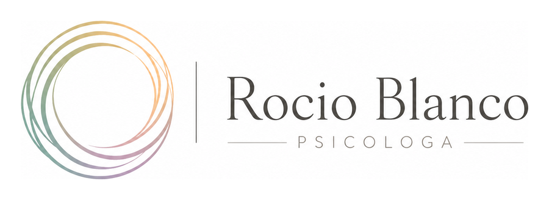

♡
Acompañamiento personalizado
Adaptado a tus necesidades y a tu momento vital.

Adaptado a tus necesidades y a tu momento vital.
Tu bienestar y privacidad son la prioridad.
Escucha, empatía y respeto sin juicios.
Sobre mí
Soy psicóloga y acompaño a personas que quieren comprender mejor lo que sienten, mejorar su bienestar emocional y recuperar calma en su día a día.
Mi forma de trabajar se basa en crear un espacio seguro, cercano y profesional, donde puedas expresarte con libertad y avanzar a tu ritmo.
Conocer mi historiaServicios
Sesiones online con un enfoque personalizado.
Herramientas para comprender y gestionar la ansiedad.
Trabajo personal para mejorar la relación contigo misma/o.
Aprender a reconocer y regular emociones difíciles.
Límites, comunicación y vínculos más sanos.
Acompañamiento en momentos de cambio o bloqueo.
Atención psicológica desde casa con comodidad y privacidad.
Por qué elegirme
La terapia es un espacio para entender lo que te pasa, poner palabras a lo que sientes y construir recursos que puedas llevar a tu día a día.


Proceso
Un primer contacto sencillo para entender qué necesitas y valorar juntas cómo puedo acompañarte.
Escríbeme por WhatsApp o completa el formulario. Te responderé para resolver dudas y confirmar disponibilidad.
Buscamos un horario que encaje contigo y te explico cómo será la primera consulta online.
En la primera sesión hablamos de tu situación actual, tus objetivos y los siguientes pasos.
Tarifas
Tarifas orientativas pendientes de confirmar antes de la publicación.
Evaluación inicial.
Acompañamiento individual.
Seguimiento continuo.
Preguntas frecuentes
Sí. Permite trabajar con comodidad, privacidad y continuidad, manteniendo un espacio seguro para el proceso terapéutico.
La primera sesión sirve para conocernos, entender tu situación actual y definir juntas los primeros objetivos.
Normalmente las sesiones tienen una duración aproximada de 50 a 60 minutos.
Sí. La información se trata con confidencialidad y de acuerdo con la normativa de protección de datos.

Blog
Señales frecuentes y cuándo pedir ayuda.
Cómo empezar a hablarte con más amabilidad.
Primeros pasos cuando una emoción te desborda.
Contacto
Si sientes que ha llegado el momento de pedir ayuda, puedes escribirme y vemos juntas cuál es el primer paso.